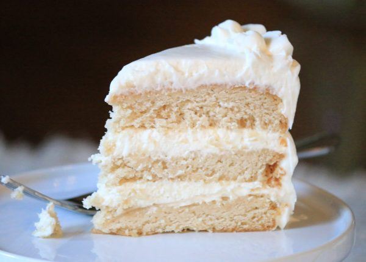

Vanilla Slice
Made with love by our very own artisan-baker from Paris

Pure white and cloud-like, white cake can be both a sophisticated, layered wedding cake or a perfect blank canvas for a funfetti cake.
Unlike yellow cake, white cake typically uses all egg whites, no yolks. This means less fat and more sponginess. White cake recipes might also call for a combination of butter and shortening to tone down the yellow hue of a pure butter cake.
White cake traditionally calls for cake flour rather than all-purpose, which makes for a thinner batter and a lighter cake. Cake flour is bleached for a pure white color and has a lower protein content, which reduces the amount of gluten that forms inside. Using cake flour, you’ll achieve a good rise from the cake and a very light, fine crumb in the structure.